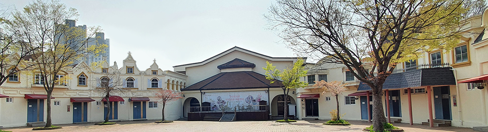

> 프로그램 > 유스호스텔
유스호스텔
캠프안내
특별한 전통문화 체험을 위한 맞춤 프로그램
요금안내
| 구분 | 1인 요금 | 프로그램 |
|---|---|---|
| 객실PKG | 22,000원 | 객실 + 식사 + 입장료 |
* 레크레이션 및 체험 프로그램 별도 문의
* 객실별 수용인원 별도 문의
코스안내
1박2일 코스
| 시간 | 1일차 | 2일차 |
|---|---|---|
| 07:00 | 차량탑승 및 출발 한국 민속촌 유스호스텔 도착 |
기상 / 세면 건강 체조 및 산책 |
| 08:00 | ||
| 09:00 | 아침식사 | |
| 10:00 | 전통민속관 ․ 세계민속관 관람 후 학습활동 | |
| 11:00 | 전통민속놀이(그네터) | |
| 12:00 | 점심식사(도시락) | 놀이기구 3종이용 |
| 13:00 | 여는 마당(입소식) 생활안내, 안전교육, 숙소배정 |
점심식사 |
| 14:00 | 한국민속촌 전통공연 관람 (얼씨구절씨구야, 우리가락좋을씨고, 전통혼례 등) |
맺는 마당(퇴소식) 소감문작성 및 숙소정리 |
| 15:00 | * 선택형 체험활동 (별도비용) 선비체험 / 전통놀이 / 나무창작공예 / 하회탈 만들기 / 인절미 만들기 / 염색체험 / 전통혼례체험 / 단소만들기 / 옹기만들기 * 우천시 Program 레크 및 포크댄스 / 도전 OX퀴즈 / 협동놀이 (파이프라인 게임) / 명화감상 * 여름, 겨울은 물놀이와 눈썰매 추가운영 |
|
| 16:00 | 전통문화 체험활동 | |
| 17:00 | 선택형 체험활동 인절미, 천연염색, 선비체험, 탈만들기 |
|
| 18:00 | 저녁시간 | |
| 19:00 | 개인정비 / 자유시간 | |
| 20:00 | 한국민속촌 축제의 밤 레크레이션/장기자랑/캠프파이어 |
|
| 21:00 | 생활점검 / 취침 |
* 프로그램 시간은 협의에 따라 조정 가능합니다.
2박3일 코스
| 시간 | 1일차 | 2일차 | 3일차 |
|---|---|---|---|
| 07:00 | 차량탑승 및 출발 한국 민속촌 유스호스텔 도착 |
기상 / 세면 및 아침산책 | 기상 / 세면 및 아침산책 |
| 08:00 | 아침식사 | 아침식사 | |
| 09:00 | 레크 및 포크댄스 | 전통민속관 (세계민속관 관람 후 학습활동) | |
| 10:00 | 관아체험활동 (형벌체험) | ||
| 11:00 | 전통민속놀이(관아 앞) | 놀이기구 3종이용 | |
| 12:00 | 점심식사(도시락) | 점심식사 | 점심식사 |
| 13:00 | 여는 마당(입소식) 생활안내, 안전교육, 숙소배정 |
자유시간 / 개인정비 | 맺는 마당(퇴소식) 소감문작성 및 숙소정리 |
| 14:00 | 전통문화 체험활동 | 한국민속촌 전통공연 관람 (얼씨구절씨구야, 우리가락좋을씨고, 전통혼례 등) |
* 선택형 체험활동 (별도비용) 선비체험(\5,000), 전통놀이 (\4,000) 나무창작공예 (\4,000), 하회탈 만들기 (\4,500) 인절미 만들기 (\3,500), 염색체험 (\3,000) 전통혼례체험 (\12,000), 단소만들기 (\7,000) 옹기만들기 (음각 \7,000 성형 \9,000) * 우천시 프로그램 레크 및 포크댄스, 도전 OX퀴즈 협동놀이 (파이프라인 게임), 명화감상 * 여름, 겨울은 물놀이와 눈썰매 추가운영 |
| 15:00 | 천연염색 체험(손수건) 또는 인절미체험 (전통떡메) |
||
| 16:00 | 선택형체험활동 (택1) 인절미 / 천연염색 / 선비체험 / 탈만들기 |
||
| 17:00 | 숙소 및 식사 예절 교육 | ||
| 18:00 | 저녁시간 | 저녁시간 | |
| 19:00 | 개인정비 / 자유시간 | 개인정비 / 자유시간 | |
| 20:00 | 도미노게임 | 레크레이션/장기자랑/캠프파이어 | |
| 21:00 | 생활점검 / 취침준비 | 생활점검 / 취침준비 | |
| 22:00 | 취침 | 취침 |
* 프로그램 시간은 협의에 따라 조정 가능합니다.